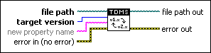

TDMS Convert Format VI
Owning Palette: Advanced TDMS VIs and Functions
Requires: Base Development System
Converts the file format version of a .tdms file from 1.0 to 2.0 or vice versa. This VI overwrites the .tdms file with the new file format version you specify in the target version input. This VI also changes the byte order of the .tdms file to native, host order.

 Add to the block diagram Add to the block diagram |
 Find on the palette Find on the palette |